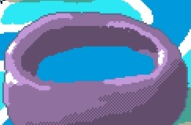
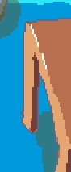
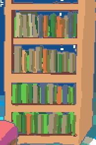
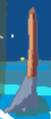
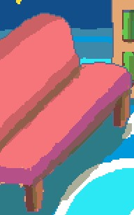

[English version]
keep an eye on My Little Fledgling
～ 気にかけてあげて

「CLICK TO START」をタップ／クリックするとゲームが始まります。
Windows実行ファイル(.exe)でもプレイできます。
内容は同じです。
はじめに
これは『レスレリアーナのアトリエ ～紅の錬金術士と白の守護者～』のファンゲームです。
けもみみ少女の名前はリアス。ゲーム開始時点では駆け出しの錬金術士です。
リアスを見守ってあげてください。本作は彼女の生活を眺めるのが主体のゲームで、時々やさしく促すことはできますが、集中しているときは邪魔しないであげてください。
ゴール
本作に明確なクリア条件やエンディングはありません。

- レベル:
高品質なアイテムを作ることでリアスのスキルレベルが上がります。
- お金:
アイテムを売るとお金が手に入ります。品質の高いアイテムほど高値になります。
セーブ
このゲームは進行状況をWebブラウザまたはPCに自動的に保存します。
リアスを見ていないとき（ゲームが起動していないとき）でも、彼女はその間もやるべきことをやっています。
操作方法
- マウス/タッチ:
家具をクリック／タップするとアクションを促します。
- キーボード:
- ←→:
カーソルを動かして選択する家具を切り替えます。
- スペース:
選択中の家具に応じたアクションを促します。
- コントローラ:
- ←→:
カーソルを動かして選択する家具を切り替えます。
- A/B:
選択中の家具に応じたアクションを促します。
アクション
- 調合:

錬金釜のアクションです。
錬金釜で中和剤を調合します。リアスのスキルと集中力は、高品質な中和剤ができる確率に影響します。一方で、高品質な中和剤の調合はスキル向上につながります。
- 小休止:

机のアクションです。
次に何をしようか考えますが、たぶん調合か睡眠のどちらかです。
- 読書:

本棚のアクションです。
本を読むとスキルが向上します。
- 掃除:

ほうきのアクションです。
部屋を片付け、散らかった中和剤を回収します。回収した物は換金されます。掃除は健康にやさしい効果もあります。
- 睡眠:

ソファのアクションです。
睡眠によってスタミナが回復します。
ステータスの説明
 スタミナ:
スタミナ:
スタミナが極端に低いと、リアスは指示に従わなくなることがあります。
 健康:
健康:
健康が低いと、スタミナ回復の速度が落ちます。
 集中力:
集中力:
集中力が高いほど、調合で良い結果が出る確率が上がります。
ヒント
序盤は、掃除と読書をするように促すと スキルが早く向上します。
README
『レスレリアーナのアトリエ ～紅の錬金術士と白の守護者～』はコーエーテクモゲームスの製品です。